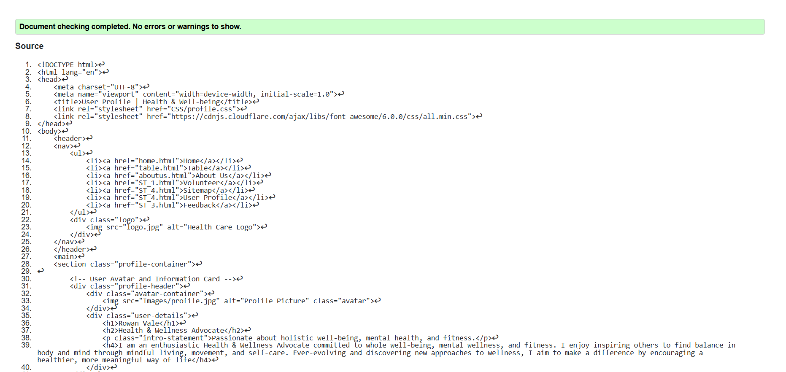
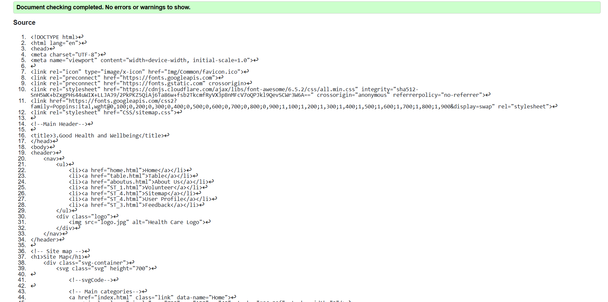
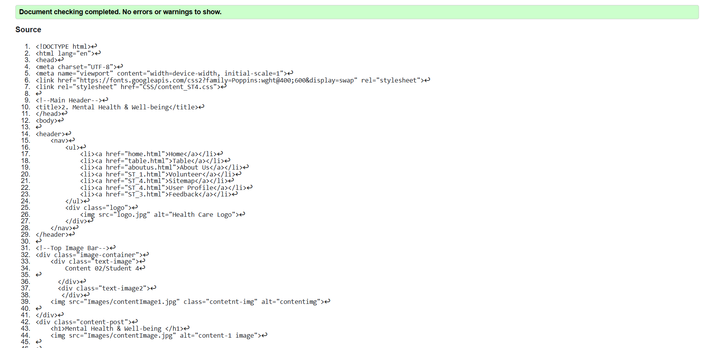

Profile Page validation report
I found mistakes on my Profile page while I was validating. I repaired missing alt text, incorrect tag usage and stray tags. That made the structure and the accessibility of the page better. I understood that it is necessary to follow web standards and create clear HTML to improve usability.
Sitemap Page validation report
Validating my Sitemap page found and corrected issues like incorrect nesting of lists, stray tags, fixing these improved the structure and readability of the page, learned the importance of writing well-structured HTML to make the site easier to navigate and more accessible for users.
Content Page validation report
During Content page validation, I was able to find and fix a few things such as bad use of html tags or broken links. These repairs made sure the content page was up to web standards and could be reached. This taught me the importance of using semantic html and making sure everything on the page had a purpose. This also proved that testing pages can help get rid of errors that could lower the user experience.
